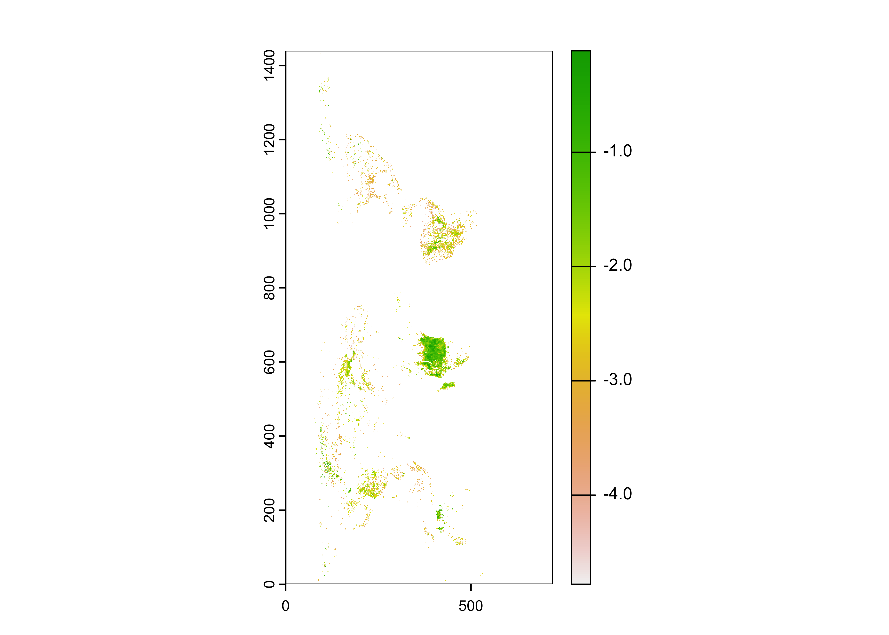

HDF
1 Introduction
HDF (Hierarchical Data Format), see [https://www.hdfgroup.org] is another format for storing large data files and associated metadata, that is not unrealted to netCDF, because in fact netCDF-4 uses the HDF-5 “data model” to store data. There are currently two versions of HDF in use HDF4 and HDF5, and two special cases designed for handling satellite remote-sensing data (HDF-EOS and HDF-EOS5). Unlike netCDF-4, which is backward compatible with netCDF-3, the two versions are not mutually readible, but there are tools for converting between the different versions (as well as for converting HDF files to netCDF files).
HDF5 files can be read and written in R using the rhdf5 package, which is part of the Bioconductor collection of packages. HDF4 files can also be handled via the rgdal package, but the process is more cumbersome. Consequently, the current standard approach for analyzing HDF4 data in R is to first convert it to HDF5 or netCDF, and proceed from there using rhdf5.
Compared to netCDF files, HDF files can be messy: they can contain images as well as data, and HDF5 files in particular may contain groups of datasets, which emulated in some ways the folder/directory stucture on a local machine. This will become evident below.
2 Preliminary set up
The rhdf5 package can be retrived from Bioconductor, and installed as follows. Generally, a lot of dependent packages will also need to be installed, as well, but the process is usually straightforward.
# install rhdf5
if (!requireNamespace("rhdf5", quietly = TRUE))
install.packages("BiocManager")
BiocManager::install("rhdf5", version = "3.8")The examples below use data from TEMIS, the Tropospheric Emission Monitoring Internet Service ([http://www.temis.nl/index.php]), and the Global Fire Emissions Database (GFED, [https://www.globalfiredata.org/index.html]). The TEMIS data are HDF4 and need to be converted, while the GFED data are HDF5. The specific data sets can be found on the ClimateLab SFTP server.
The various conversion tasks and tools are:
- HDF4 to HDF5:
h4toh5convertfrom the HDFGroup [h4h5tools] - HDF4 to netCDF:
h4tonccf(netCDF-3), andh4tonccf_nc4(netCDF-4), from HDF-EOS [http://hdfeos.org/software/h4cflib.php] - HDF4 and HDF5 (and other file types) to netCDF:
ncl_convert2ncfrom Unidata [https://www.ncl.ucar.edu/]
The first two conversion tools have installers for MacOS, Windows and Linux. On the Mac, it will usually be the case that the executable file should be moved to the /Applications folder, while on Windows the usual fooling around with paths will be required. The ncl_convert2nc tool is part of NCL, which can be installed on run on Windows 10 machines using the Linux subsystem for Windows.
There are some useful tutorials on using HDF in R from the NSF NEON program:
Begin by loading the appropriate packages:
For latter plotting of the data, also read a world outline shape file:
# read a world shapefile
shp_path <- "/Users/bartlein/Projects/ESSD/data/shp_files/ne_110m_admin_0_countries/"
shp_name <- "ne_110m_admin_0_countries.shp"
shp_file <- paste(shp_path, shp_name, sep="")
world_shp <- read_sf(shp_file)
world_outline <- as(st_geometry(world_shp), Class="Spatial")
# plot the outline
plot(world_outline, col="blue", lwd=1)
2.1 Convert an HDF4 file to HDF5
In this example, a data set of the “Clear-Sky UV Index”" from TEMIS was downloaded (i.e. uvief20190423.hdf – 2019-04-23) from the website listed above. This is an HDF4 file, which can be verified in Panoply. Viewing files in Panoply is always good practice–in this case the particular layout of the data in file is rather ambiguous at first glance, and so getting a look at the contents of the file before attempting to read it is a good idea.
The HDF4 file can be converted by typing in a terminal or command window (for example):
This will create the file uvief20190423.h5. (Note that an explicit output filename and path can be included. Not everything in the HDF4 file will be converted, and it’s likely that a number of error messages will appear, giving the impression that the operation has failed. Check to see whether in fact the HDF5 was indeed created.)
3 Read a simple HDF5 file
Begin by setting paths and filenames:
# set path and filename
hdf_path <- "/Users/bartlein/Dropbox/DataVis/working/geog490/data/hdf_files/"
hdf_name <- "uvief20190423.h5"
hdf_file <- paste(hdf_path, hdf_name, sep="")List the contents of the file. (WARNING: This can produce a lot of output)
## group name otype dclass dim
## 0 / Latitudes H5I_DATASET FLOAT 720
## 1 / Longitudes H5I_DATASET FLOAT 1440
## 2 / Ozone_column H5I_DATASET INTEGER 1440 x 720
## 3 / UVI_error H5I_DATASET INTEGER 1440 x 720
## 4 / UVI_field H5I_DATASET INTEGER 1440 x 720
## 5 / fakeDim0 H5I_DATASET INTEGER 720
## 6 / fakeDim1 H5I_DATASET INTEGER 1440Read the attributes of the UVI_field variable, the UV index:
## Warning in H5Aread(A): Reading attribute data of type 'VLEN' not yet implemented. Values replaced by
## NA's.## $DIMENSION_LIST
## [1] NA NA
##
## $No_data_value
## [1] "-1.0E+03 * scale_factor"
##
## $Scale_factor
## [1] 0.001
##
## $Title
## [1] "Erythemal UV index"
##
## $Units
## [1] "1 [ 1 UV index unit equals 25 mW/m2 ]"Get the latitudes and longitudes of the grid:
## [1] 1440## [1] -179.875 -179.625 -179.375 -179.125 -178.875 -178.625## [1] 178.625 178.875 179.125 179.375 179.625 179.875## [1] 720## [1] -89.875 -89.625 -89.375 -89.125 -88.875 -88.625## [1] 88.625 88.875 89.125 89.375 89.625 89.875Get the UV data, and convert it to a raster object, and get a short summary:
## [1] "matrix"## int [1:1440, 1:720] 0 0 0 0 0 0 0 0 0 0 ...## class : RasterLayer
## dimensions : 1440, 720, 1036800 (nrow, ncol, ncell)
## resolution : 0.001388889, 0.0006944444 (x, y)
## extent : 0, 1, 0, 1 (xmin, xmax, ymin, ymax)
## coord. ref. : NA
## data source : in memory
## names : layer
## values : 0, 18342 (min, max)Get a quick look using the raster version of the image() function:

The layout of the data in the file is obviously not straightforward. First, the coordinates of the data are not longitudes and latitudes but simply values that range from 0 to 1, and the orientation of the grid is such that the raster object needs to be both tranposed (exchanging x and y), and flipped north to south. this can be done as follows, also adding explicit longitude and latitude dimensions:
# transpose and flip the raster
UVI <- flip(raster(t(h1), xmn=lon[1], xmx=lon[nlon], ymn=lat[1], ymx=lat[nlat]), "y")
UVI## class : RasterLayer
## dimensions : 720, 1440, 1036800 (nrow, ncol, ncell)
## resolution : 0.2498264, 0.2496528 (x, y)
## extent : -179.875, 179.875, -89.875, 89.875 (xmin, xmax, ymin, ymax)
## coord. ref. : NA
## data source : in memory
## names : layer
## values : 0, 18342 (min, max)3.1 Plot the UV data
A rasterVis plot can be produced as follows:
# rasterVis plot
mapTheme <- rasterTheme(region=brewer.pal(8,"YlOrRd"))
plt <- levelplot(UVI, margin=F, par.settings=mapTheme, main="UV Index")
plt + layer(sp.lines(world_outline, col="black", lwd=1.0))
Close the open files before moving on:
4 Read a more complicated HDF5 file
A much more stuctured file that exploits the ability of HDF5 to store data in “groups” that mimics in some ways the directory or folder structure on a local computer is represented by the GFED4.1 fire data set. As usual, begin by setting paths and file names.
# set path
hdf_path <- "/Users/bartlein/Dropbox/DataVis/working/geog490/data/hdf_files/"
hdf_name <- "GFED4.1s_2016.hdf5"
hdf_file <- paste(hdf_path, hdf_name, sep="")List the file contents, DOUBLE WARNING: This really does produce a lot of output, only some is included here:
## group name otype dclass dim
## 0 / ancill H5I_GROUP
## 1 /ancill basis_regions H5I_DATASET INTEGER 1440 x 720
## 2 /ancill grid_cell_area H5I_DATASET FLOAT 1440 x 720
## 3 / biosphere H5I_GROUP
## 4 /biosphere 01 H5I_GROUP
## 5 /biosphere/01 BB H5I_DATASET FLOAT 1440 x 720
## 6 /biosphere/01 NPP H5I_DATASET FLOAT 1440 x 720
## 7 /biosphere/01 Rh H5I_DATASET FLOAT 1440 x 720
## 8 /biosphere 02 H5I_GROUP
## 9 /biosphere/02 BB H5I_DATASET FLOAT 1440 x 720
## 10 /biosphere/02 NPP H5I_DATASET FLOAT 1440 x 720
## 11 /biosphere/02 Rh H5I_DATASET FLOAT 1440 x 720
...
## 52 / burned_area H5I_GROUP
## 53 /burned_area 01 H5I_GROUP
## 54 /burned_area/01 burned_fraction H5I_DATASET FLOAT 1440 x 720
## 55 /burned_area/01 source H5I_DATASET INTEGER 1440 x 720
## 56 /burned_area 02 H5I_GROUP
## 57 /burned_area/02 burned_fraction H5I_DATASET FLOAT 1440 x 720
## 58 /burned_area/02 source H5I_DATASET INTEGER 1440 x 720
## 59 /burned_area 03 H5I_GROUP
...Read the longtidues and latiudes. A preliminary look at the file in Panoply revealed that longitudes and latitudes were stored as full matices, as opposed to vectors. Consequently, after reading, only the first row (for longitude) and first column (for latitude) were stored.
# read lons and lats
lon_array <- h5read(hdf_file, "lon")
lon <- lon_array[,1]
nlon <- length(lon)
nlon## [1] 1440## [1] -179.875 -179.625 -179.375 -179.125 -178.875 -178.625## [1] 178.625 178.875 179.125 179.375 179.625 179.875## [1] 720## [1] -89.875 -89.625 -89.375 -89.125 -88.875 -88.625## [1] 88.625 88.875 89.125 89.375 89.625 89.875Read the attributes of the burned_area variable:
## list()From the listing of the contents of the file, and the information provided in Panoply, it can be seen that, for example, the burned fraction (the proportion of a grid cell burned), for July 2016 is in the variable named /burned_area/07/burned_fraction. Get that variable:
## [1] "matrix"## num [1:1440, 1:720] 0 0 0 0 0 0 0 0 0 0 ...## class : RasterLayer
## dimensions : 1440, 720, 1036800 (nrow, ncol, ncell)
## resolution : 0.001388889, 0.0006944444 (x, y)
## extent : 0, 1, 0, 1 (xmin, xmax, ymin, ymax)
## coord. ref. : NA
## data source : in memory
## names : layer
## values : 0, 0.8838143 (min, max)Take a quick look:

The image plot, confirmed by Panoply, suggests that the raster needs to be transposed.
## class : RasterLayer
## dimensions : 720, 1440, 1036800 (nrow, ncol, ncell)
## resolution : 0.2498264, 0.2496528 (x, y)
## extent : -179.875, 179.875, -89.875, 89.875 (xmin, xmax, ymin, ymax)
## coord. ref. : NA
## data source : in memory
## names : layer
## values : 0, 0.8838143 (min, max)4.1 plot the GFED burned fraction data
Plot the data:
# rasterVis plot
mapTheme <- rasterTheme(region=brewer.pal(8,"OrRd"))
plt <- levelplot(log10(BF), margin=F, par.settings=mapTheme, main="log10 Burned Fraction")
plt + layer(sp.lines(world_outline, col="black", lwd=1.0))